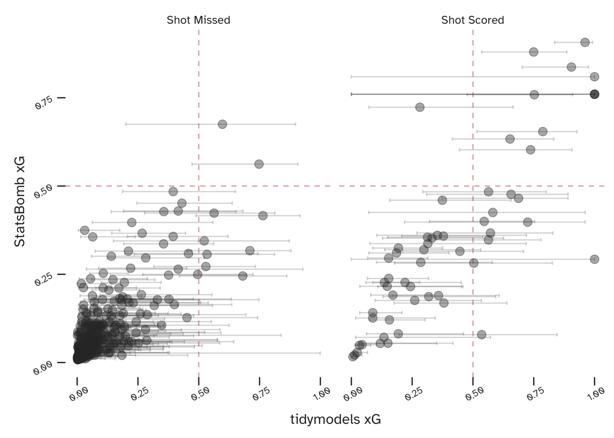
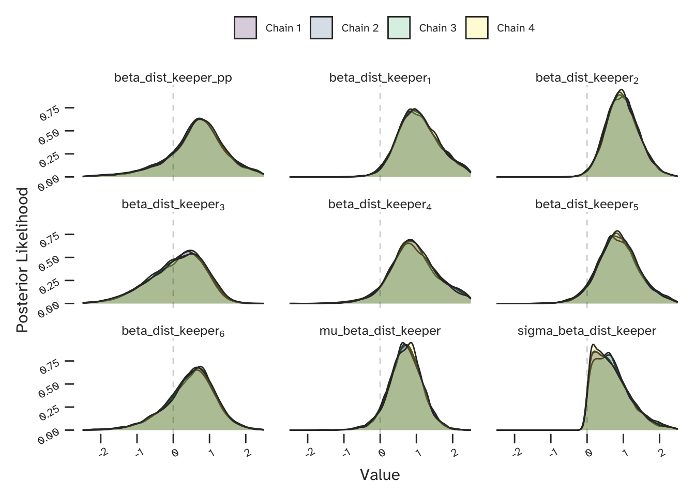
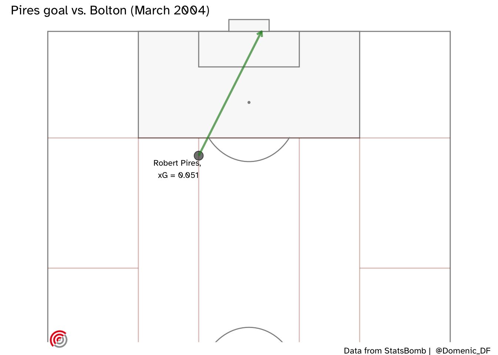
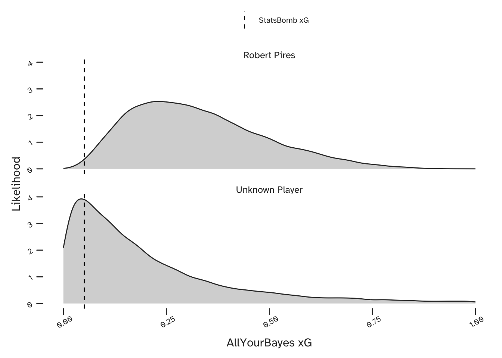

library(StatsBombR); library(tidyverse)
Prem_SB_matches <- FreeMatches(Competitions = SB_comps %>%
dplyr::filter(competition_name == 'Premier League') %>%
dplyr::filter(competition_gender == 'male'))
Arsenal_0304_shots <- StatsBombFreeEvents(MatchesDF = Prem_SB_matches,
Parallel = TRUE) %>%
allclean() %>%
dplyr::filter(type.name == 'Shot') %>%
dplyr::filter(possession_team.name == 'Arsenal')TLDR
This is part 2 of an article on fitting a Bayesian partial pooling model to predict expected goals. It has the benefits of (a) quantifying aleatory and epistemic uncertainty, and (b) making both group-level (player-specific) and population-level (team-specific) probabilistic predictions. If you are interested in these ideas but not in statistical language, then you can also check out part 1.
Expected Goals
Expected Goals (or xG) is a metric that was developed to predict the probability of a football (soccer) player scoring a goal, conditional on some mathematical characterisation of the shooting opportunity. Since we have a binary outcome (he or she will either score or not score) we can use everyone’s favourite GLM - logistic regression.
Unfortunately this causes some overlap with a previous blog post - ‘Bayesian Logistic Regression with Stan’, but don’t worry - the focus here is all about Partial Pooling.
First let’s look at a non-Bayesian base case. StatsBomb have kindly made lots of football data freely available in their R package. The below creates a dataframe of the shots taken by Arsenal FC during the 2003-04 Premier League winning season.
Using R’s tidymodels framework - make sure to have a look at Julia Silge’s tutorials if you are unfamiliar - we can specify and fit a logistic regression. The below compares our results (including confidence intervals) to those from StatsBomb.
If you are interested in creating something similar yourself, this model has standardised inputs for parameters with relatively large values (such as angles and distances) and one hot encoding of categorical inputs (such as whether or not the shot was taken with a players weaker foot).

Since we have used StatsBomb data (though their model will no doubt be based on a much larger collection) we would expect our results to be similar to theirs, and they are. Considering just the point estimates, the two models appear to broadly agree, especially when both are predicting a very low or a very high xG.
However, some of the confidence intervals on our tidymodels predictions are very large. Although we would generally expect these to decrease as we introduced more data, we know that football matches (and especially specific events within football matches) are full of uncertainty. If we want to be able to quantify this uncertainty in a more useful way (we do) - we want a Bayesian model. The below section details the specific type of Bayesian model that I’m proposing for estimating xG.
Multi-Level (Partial Pooling) Models
Hierarchical (or ‘nested’) data contains multiple groups within a population, such as players with a football team. Unfortunately, this information is lost (and bias is introduced) when such data is modelled as a single population. At the other extreme we can assume each group is fully independent, and the difficulty here is that there will be less data available and therefore more variance in our predictions.
Consequently, we want an intermediate solution, acknowledging variation between groups, but allowing for data from one group to inform predictions about others. This is achieved by using a multi-level (or hierarchical) model structure. Such models allow partial sharing (or pooling) of information between groups, to the extent that the data indicate is appropriate. This approach results in reduced variance (when compared to a set of corresponding independent models), a shift towards a population mean (known as shrinkage), and generally an improved predictive performance.
Sounds great, right? So why would anyone ever not use this kind of model? In his excellent blog, Richard McElreath makes the case that multi-level models should be our default approach. His greatest criticism of them is that they require some experience or training to specify and interpret. His book has a dedicated chapter to help with that. Of course, there are many better descriptions of multi-level modelling than you will get from me, but I personally found the examples in Andrew Gelman and Jennifer Hill’s book to be very helpful. Finally, Michael Betancourt has written a much more comprehensive blog post on the topic, which includes a discussion on the underlying assumption of exchangeability.
We can create a partial pooling model by re-writing the below:
\[ xG = Inverse \; Logit(\alpha + \beta \cdot X) \]
To look like this:
\[ xG = Inverse \; Logit(\alpha_{[Player]} + \beta_{[Player]} \cdot X) \]
In this new structure, each parameter will now be a vector of length \(N\) (where \(N\) players are being considered). This means there will be a different co-efficient describing how \(xG\) varies with distance from goal for each player. This makes sense as we would expect variation between players and we want our model to be able to describe it.
If each of these parameters had their own priors, we would essentially have specified \(N\) independent models - one for each player. But there is a twist here: each of the vectors of co-efficients share a single prior.
\[ \beta \sim N(\mu_{\beta}, \; \sigma_{\beta}) \]
This will pull each of the individual co-efficients towards a shared mean, \(\mu_{\beta}\). The variation between the players (for a given parameter) is characterised by \(\sigma_{\beta}\). Rather than specify these ourselves, we will also estimate these as part of the model. This means that the extent of the pooling is conditional on the data, which is an extremely useful feature. However, we then need to include priors on these parameters, which are known as hyperpriors.
Note that this process has introduced an extra layer (or level) to the model structure. This is why they are known as multi-level or hierarchical models. The term partial pooling is more a description of what they do.

We see the greatest benefit of this approach when only limited data is available for one or more groups. If one player took very few shots during a period of data collection, then there will be a lot of uncertainty in their xG predictions ….unless we can make use of the data we have for the rest of the team.
What does this look like in Stan?
The below is a reduced Stan model, with just one co-efficient (concerning the distance from goal of the shot). This is not me being secretive, its just that the full model is quite large. You can simply add more parameters like a multi-variate linear regression on the log-odds scale, but remember that they will each require priors, hyperpriors, and data.
data {
int <lower = 1> n_shots;
int <lower = 0, upper = 1> goal [n_shots];
int <lower = 1> n_players;
int <lower = 1> player_id [n_shots];
vector [n_shots] dist_goal;
real mu_mu_alpha;
real <lower = 0> sigma_mu_alpha;
real<lower = 0> rate_sigma_alpha;
real mu_mu_beta_dist_goal;
real <lower = 0> sigma_mu_beta_dist_goal;
real<lower = 0> rate_sigma_beta_dist_goal;
}
parameters {
vector [n_players] alpha;
vector [n_players] beta_dist_goal;
real mu_alpha;
real <lower = 0> sigma_alpha;
real mu_beta_dist_goal;
real <lower = 0> sigma_beta_dist_goal;
}
model {
// Logistic model
goal ~ bernoulli_logit(alpha[player_id] + beta_dist_goal[player_id] .* dist_goal);
// Priors
alpha ~ normal(mu_alpha, sigma_alpha);
beta_dist_goal ~ normal(mu_beta_dist_goal, sigma_beta_dist_goal);
// Hyperpriors
mu_alpha ~ normal(mu_mu_alpha, sigma_mu_alpha);
sigma_alpha ~ exponential(rate_sigma_alpha);
mu_beta_dist_goal ~ normal(mu_mu_beta_dist_goal, sigma_mu_beta_dist_goal);
sigma_beta_dist_goal ~ exponential(rate_sigma_beta_dist_goal);
}
generated quantities {
real alpha_pp = normal_rng(mu_alpha, sigma_alpha);
real beta_dist_goal_pp = normal_rng(mu_beta_dist_goal, sigma_beta_dist_goal);
}A few things that I’d like to note:
- My input data is of length
n_shotsand my parameters are vectors of lengthn_players. - I’ve included my hyperpriors (the
mu_mu_...,sigma_mu..., andrate_sigma...terms) as data, rather than hard code values into the file. This is so I can re-run the model with new hyperpriors withoutStanneeding to recompile. - Even though I have included the
mu...andsigma..terms as priors in my comment, this is just to help describe the model structure. They are all included in the Parameters block of the model. As discussed above, they are inferred as part of the joint posterior distribution, meaning that we are estimating the extent of the pooling from the data. - I’m using the generated quantities to produce my population-level parameters, so that I have everything I need to put together probabilistic predictions in either
RorPython.
#### Model Parameters
The posterior distribution (which Stan has sampled from) is a joint probabilistic model of all parameters. Let’s have a look at a few, specifically those corresponding to the effect of distance between the shot taker and goalkeeper. Shown below is the co-efficient for \(6\) players (indexed \(1 \rightarrow 6\)). We can see that the distance to the keeper is predicted to influence each player differently.

Some of the players will have taken fewer shots and therefore we will have less data to fit their player-specific parameters. The mu_beta_dist_keeper and sigma_beta_dist_keeper parameters in the above plot are the shared ‘priors’ that control how the data from each of the players can be used to inform one another. The beta_dist_keeper_pp parameter is specified in the generated quantities block of my Stan model. It is correlated samples from the distribution characterised by the shared priors. This becomes the population (team) level co-efficient in my predictions.
I’ve included some predictions for some actual shots taken that season in part 1 of this article, but since this is the purpose of the model let’s look at one more.
Here is Robert Pirès goal from just outside the box at home to Bolton Wanderers in 2004. It was on his stronger (right) foot and he was not under pressure from any defenders.

As labelled on the above plot, the StatsBomb model only gave Pirès a 5% chance of scoring this chance. The below xG predictions are from the Bayesian partial pooling model, both for Robert Pirès (upper) and for the case where any Arsenal player could be shooting (lower). Also shown is the StatsBomb prediction. We see an improvement (since we know this chance was scored) when we make a player-specific prediction.

Our probabilistic predictions contain more information than point estimates, but for the purposes of a simpler comparison we can consider the mean value. The mean value of our team-level prediction is 20%, but conditional on the knowledge that Pirès was shooting, this becomes 33%.
If Arsène Wenger could’ve chosen which of his players was presented with this opportunity, Robert Pirès would’ve been one of his top choices (though possible behind Thierry Henry). We have an intuitive understanding that such players have the necessary attributes to score from relatively difficult opportunities such as this, and this is accounted for in our model. We have tackled the challenge of greatly reduced (player-specific) datasets, by allowing them to share information on the basis of how similar they are.
Challenges
Multi-level models capture the multi-level structure of hierarchical (nested) datasets, accounting for both variability and commonality between different groups (in this example: between different players in a team). However, as we can see from the previous plot, by introducing a set of parameters for each group and relating them all in this way, the posterior distribution now has many more dimensions and is more challenging to sample from. If you are using Stan you may now see more warning messages regarding divergent transitions - a concept that José Mourinho is acting out, below. If you do run into these problems, I would recommend reviewing the guidance in the Stan manual on reparameterisation (writing your same model on a new scale, such that it is easier for the software to work with).

Finally, I have published a paper demonstrating this modelling approach in an engineering context, which includes additional details for anyone who is interested: ‘Consistent and coherent treatment of uncertainties and dependencies in fatigue crack growth calculations using multi-level Bayesian models’.
Citation
BibTeX citation:
@online{di francesco2021,
author = {Di Francesco, Domenic},
title = {Uncertainty in {xG.} {Part} 2},
date = {2021-01-07},
url = {https://www.allyourbayes.com//posts/xg_pt2},
langid = {en}
}
For attribution, please cite this work as:
Di Francesco, Domenic. 2021. “Uncertainty in xG. Part 2.”
January 7, 2021. https://www.allyourbayes.com//posts/xg_pt2.